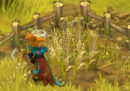
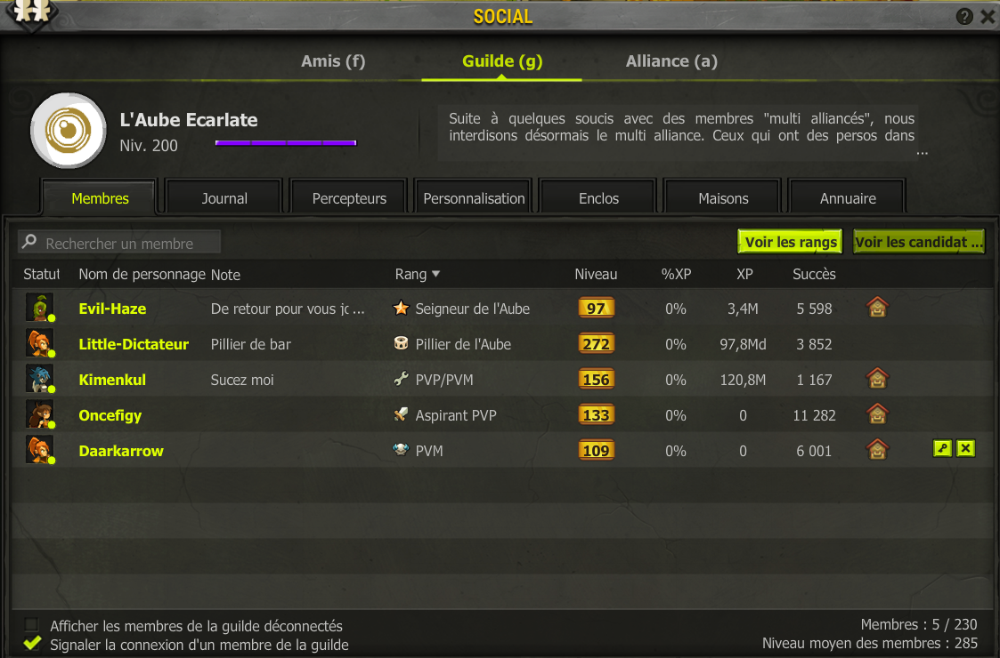
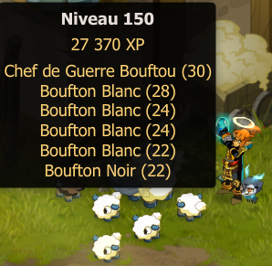

Dans dofus vous avez la possibilité de faire plusieurs metiers qui seront nécessaire pour votre aventure. Que ce soit pour votre propre personnage ou bien pour vous faire des kamas.

Vous allez pouvoir aussi un coter entraide avec des guildes et alliances, vous allez pouvoir conquerir des territoire et pouvoir poser ce quon appelle un percepteur. Vous avez donc un coter PVP avec les guerres d'alliances ainsi que le kolizeum.

Si on parle PVP nous allons aussi parlez de PVM qui represente une grande partie de votre futur aventure, vous allez passer de zone ou il fais tres chaud tel que brakmar mais vous passerez aussi pars des zone plus froide de type frigost, mais aussi part des zone dessertique tel que saharach.